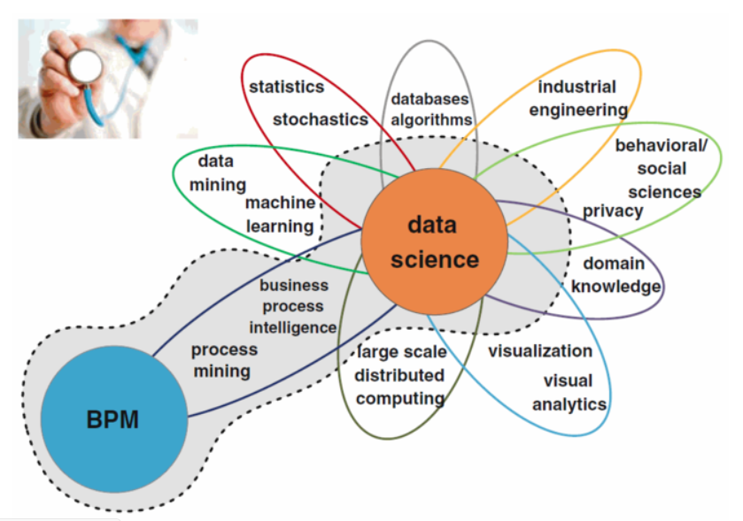
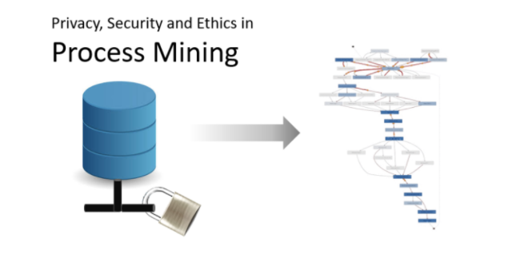

프로세스 마이닝(Process Mining)이란?
dataframe이 짤라서 보일때 웹페이지를 축소해서 보시길 바랍니다~^^(50%이면 다 보일것입니다)
프로세스 마이닝 (Process Mining)이란?
“프로세스 마이닝 (Process Mining)이 뭐야? 데이터 마이닝 같은거야?”
내가 프로세스 마이닝을 공부한다고 하면 항상 듣는 질문이다. 이 질문을 항상 들었다는 것이 이 블로그를 시작하게 된 이유이기도 하다. 이 질문을 너무 많이 들었기 때문에 요즘은 아예 대답을 준비해 놓는 편이다.
“데이터 마이닝의 방법 중 하나라고 생각하면 편해. 하지만 다른 점은 프로세스 그 자체에 좀 더 집중한다는 점이야. 예를 들어서, 공장에서 쇳물이 하나의 철판이 되기까지 굳히기, 펴지기, 자르기 이런 다양한 과정을 거치잖아. 데이터 마이닝이 이런 공정에서 결과적으로 무엇이 일어났는가, 무엇이 일어날 것인가, 왜 일어났는가에 집중한다면, 프로세스 마이닝은 공정 과정(Process) 전체를 분석하고 시각화해서 어떻게 이 공정을 더 효율적으로 개선하고, 발전시킬 수 있는지에 집중하는 학문이야.”

프로세스 마이닝은 Data Science 중에서도 Process의 분석과 개선에 집중하는 학문이다. 이렇게 대답하면, 대부분의 사람들이 “아, 공장에서 공정 분석을 할 때 이용할 수 있구나.” 하고 좁은 분야에만 적용할 수 있다고 생각하고 만다. 하지만 프로세스는 어디에나 존재한다. 생산, 제조, 물류 등의 당연히 프로세스가 존재할 것이라고 생각되는 분야 뿐만 아니라, 웹 페이지 안에서 사용자가 물건을 구매하기까지의 과정, 병원에서 환자가 접수할 때부터 퇴원할 때까지의 과정, 회사에서 직원들이 일을 받고 처리하기까지의 과정 모두가 시작 단계와 끝 단계를 가지고 있는 프로세스라고 할 수 있다. 모든 프로세스에 대해서 프로세스 마이닝은 힘을 발휘할 수 있다. 달리 말하면, 앞서 말한 모든 과정들이 프로세스 마이닝으로 사용자가 더 효율적으로 물건을 구매하도록, 짧은 시간 내에 더 많은 환자들을 치료할 수 있도록, 직원들이 더 효율적으로 일을 분배할 수 있도록 개선될 수 있다는 것이다.
그렇다면 프로세스 마이닝이 해결할 수 있는 문제에는 구체적으로 어떤 것이 있을까? 이는 크게 현재 프로세스에 대한 분석, 문제점 도출 및 개선, 미래 예측으로 나눌 수 있다. 첫 번째로 프로세스 마이닝을 통해 현재 프로세스에 대한 분석을 할 수 있다. 프로세스 마이닝은 현재의 IT System에 쌓인 real event data를 기반으로 하기 때문에 현재 프로세스가 실제로 어떻게 진행되고 있는지를 정확하게 파악할 수 있게 해 준다. 또한 이를 보기 좋게 시각화해주어 한 눈에 이를 분석할 수 있도록 도와 준다.

프로세스 마이닝은 event data로부터 프로세스를 도출하여 이를 시각화하고 insight를 얻는 과정이다.
두 번째로 현재 프로세스의 문제점 도출 및 개선을 할 수 있다. 프로세스 내에서 시간을 오래 차지하는 병목 활동 (Bottleneck)이 무엇인지, 반복 작업 (Rework)은 없는지, 원래 원하던 프로세스에서 벗어난 프로세스 (Deviation)은 없는지 등의 문제점을 쉽게 분석할 수 있고, 이를 토대로 하여 이들을 개선할 수 있게 해 준다. 뿐만 아니라, 프로세스 마이닝과 데이터 마이닝을 결합하여 이런 문제점이 일어난 원인은 무엇이고, 어떤 factor가 이를 일어나게 했는지까지 분석하여 개선안을 도출할 수 있다. 세 번째로 프로세스를 기반으로 하여 미래를 예측할 수 있다. 이전의 프로세스 마이닝 결과를 바탕으로 특정 상황에서 어떤 결과가 일어날 것인지, 앞서 언급했던 문제 상황이 일어나지 않게 하려면 어떤 프로세스를 거쳐야하는지 등을 분석할 수 있다.